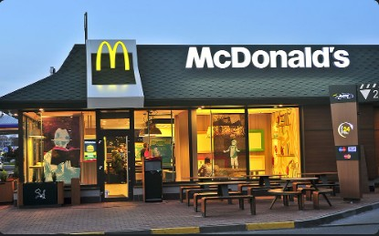
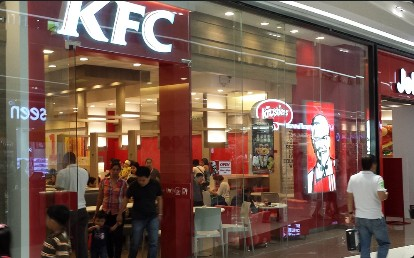
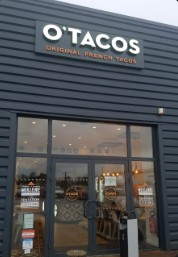
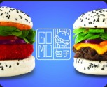
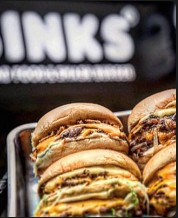

En gravissant méthodiquement les échelons : employés, Chef d'équipe, Responsable de Service, Manager, puis directeur de restaurant.

Nous avons gérés plus de 20 restaurants et formés 300+ employés, 60+ managers, 20+ directeurs et 3 franchisés



Aujourd'hui, notre savoir-faire est sollicité par des acteurs majeurs du secteur.
👉 Des enseignes comme O'Tacos, Nobi Nobi, GOMU, BINKS font appel à nous pour :
👉 Cette expérience garantit :
Une équipe qui a déjà tout vécu : ouvertures, crises, croissance. Votre investissement est entre des mains expertes.
👉 Points forts :
Gestion simultanée de plusieurs restaurants, maîtrisée depuis des années dans les plus grandes enseignes
Processus d'ouverture rodé, rapide et efficace, minimisant les délais et les risques
Capacité à structurer et scaler le réseau en un temps record grâce à notre savoir-faire
"Nous combinons une équipe issue des leaders mondiaux de la restauration rapide avec une franchise en forte expansion pour créer un acteur régional structuré et hautement rentable."
McDo & KFC
+50 restos en France
21% de marge nette